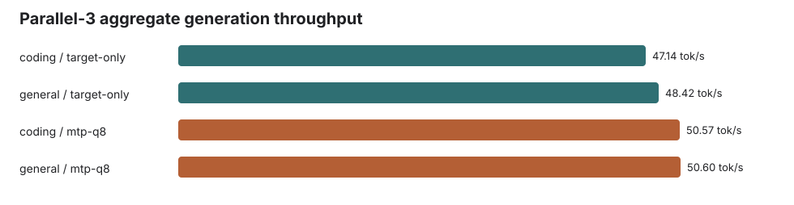
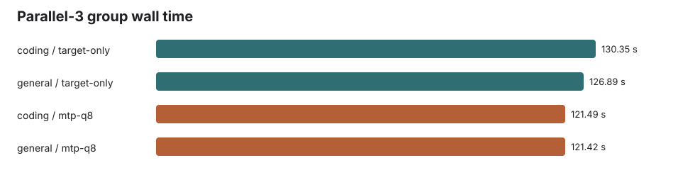
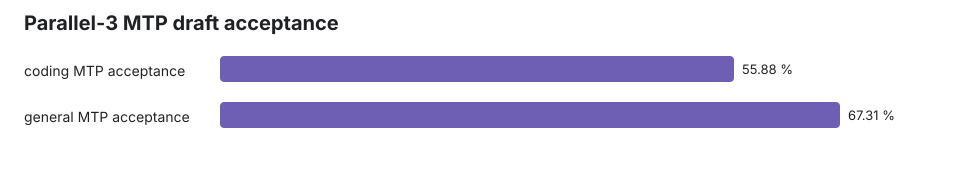

Gemma 4 12B Q4_K_XL Parallel-3 Benchmark
Three concurrent 2K-input / 2048-output streams per prompt family. Draft max 2, drafter top-k 1, accepter temperature 0.6. Generated 2026-06-03T14:35:54 local time.
Result: parallel-3 aggregate throughput is the primary metric here. Coding: 47.14 tok/s target-only vs 50.57 tok/s MTP. General: 48.42 tok/s target-only vs 50.60 tok/s MTP.
Configuration
- Target:
gemma-4-12b-it-UD-Q4_K_XL.gguf - Assistant:
gemma-4-12B-it-assistant-Q8_0.gguf - Server parallel slots:
--parallel 3, continuous batching enabled - Context:
65536; batch4096; ubatch512; flash attention on - MTP lane:
--spec-type draft-mtp, draft max2, draft KVq8_0/q8_0 - Drafter sampler patch: MTP
top_kforced to1 - Accepter generation:
n_predict=2048,temperature=0.6, server--ignore-eos
Summary
| Prompt family | Target aggregate tok/s | MTP aggregate tok/s | MTP speed | Target group wall s | MTP group wall s | MTP acceptance | Accepted / generated draft tokens |
|---|---|---|---|---|---|---|---|
| coding | 47.14 | 50.57 | 107.3% | 130.35 | 121.49 | 55.9% | 3240 / 5798 |
| general | 48.42 | 50.60 | 104.5% | 126.89 | 121.42 | 67.3% | 3523 / 5234 |
Charts



Per-request rows
| Kind | Lane | Request | Input tokens | Output tokens | Per-request tok/s | Request wall s | Draft accepted | Draft generated |
|---|---|---|---|---|---|---|---|---|
| coding | target-only | coding-1 | 2052 | 2048 | 17.47 | 130.35 | ||
| coding | target-only | coding-2 | 2053 | 2048 | 17.44 | 130.31 | ||
| coding | target-only | coding-3 | 2058 | 2048 | 17.47 | 130.34 | ||
| general | target-only | general-1 | 2062 | 2048 | 18.11 | 126.89 | ||
| general | target-only | general-2 | 2048 | 2048 | 18.09 | 126.87 | ||
| general | target-only | general-3 | 2057 | 2048 | 18.09 | 126.87 | ||
| coding | mtp-q8 | coding-1 | 2052 | 2048 | 19.59 | 117.71 | 1102 | 1890 |
| coding | mtp-q8 | coding-2 | 2053 | 2048 | 18.93 | 121.49 | 1037 | 2017 |
| coding | mtp-q8 | coding-3 | 2058 | 2048 | 19.57 | 117.81 | 1101 | 1891 |
| general | mtp-q8 | general-1 | 2062 | 2048 | 22.29 | 105.15 | 1241 | 1611 |
| general | mtp-q8 | general-2 | 2048 | 2048 | 24.80 | 95.71 | 1319 | 1455 |
| general | mtp-q8 | general-3 | 2057 | 2048 | 18.91 | 121.42 | 963 | 2168 |
Artifacts
parallel3-results.json: machine-readable metricsresponse-*.jsonandresponse-*.txt: raw responseslogs/server-target-only.logandlogs/server-mtp-q8.log: server logsprompts/*.txt: exact prompts